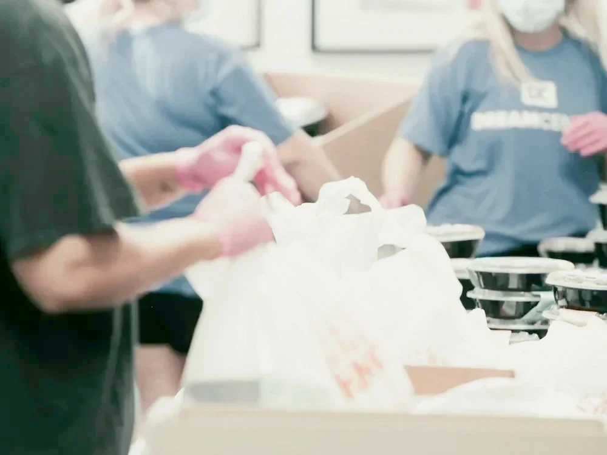

Get involved
Help for an hour, or all year
Most of our volunteers work full time. Pick a slot that fits, from 30 minutes at drop-off to a role you keep all year.
See open spots
Ways to help
Four ways in, from home to the classroom
1 hour, any time
Help from home
Cut out art kits, stuff folders or translate the newsletter on your own time.

2–3 hours, a few times a year
Event crew
Set up tables, run a game booth or pack the food drive boxes at school.
30 minutes, once a month
Morning greeter
Hold the door at drop-off and help new families find their classroom.
About 2 hours a month
Room parent
Be the friendly link between one class, its teacher and other parents.
Volunteer in four steps
Pick an hour that fits your week
- 2 minutes
Choose a slot
Browse the open spots and pick one that fits your week.
- 10 minutes, once
Get cleared
Do the free district check online, once a school year.
- The day before
Get a reminder
We text you the day before with where to go and when.
- On the day
Show up
A lead volunteer meets you and shows you the ropes.
Most of our volunteers work full time. Start with one hour.
See open spots
Open spots
Spots that still need a grown-up
Tap a spot to email the volunteer coordinator. You'll hear back within two school days.
Sign up
Game booth helper
Fall FestivalSat Oct 31 · 11 am–1 pm
6 spots left Sign upBook fair cashier
Book FairNov 9–13 · 1-hour slots
9 spots left Sign upFood drive sorter
Canned Food DriveFri Nov 20 · 3–4 pm
4 spots left Sign upWater station crew
Family Fun RunSat Nov 21 · 8–11 am
5 spots left Sign upSTEM station lead
Family STEM NightThu Dec 3 · 5–8 pm
8 spots left Sign up
FAQ
Questions new parents ask
Who can join the PTA?
Any parent, guardian, grandparent, teacher or staff member at Maple Grove. Dues are $10 per family, per school year, and nobody is turned away for cost.
I work full time. Can I still help?
Yes. Most of our slots are one hour, and many happen on weekends, in the evening or from home. Pick what fits; there is no minimum.
Do I have to come to meetings?
No, but you are welcome. Meetings are the second Tuesday at 6:30 pm in the library, with free childcare in the gym and a video link.
Where does the money go?
Teacher grants, library books, field trip buses, recess gear and family events. The treasurer shares the full budget at every meeting.
Do volunteers need a background check?
For time with students, yes: the district clearance is free, online and good for the whole school year. Help from home needs no check.
Is information available in Spanish?
Yes. The Friday newsletter goes out in English and Spanish, and every meeting has a Spanish interpreter.
Membership 2026–27
Join for $10 a family
$10 per family, per school year. You get a vote at meetings, the Friday newsletter and first pick of volunteer spots. Nobody is turned away for cost.